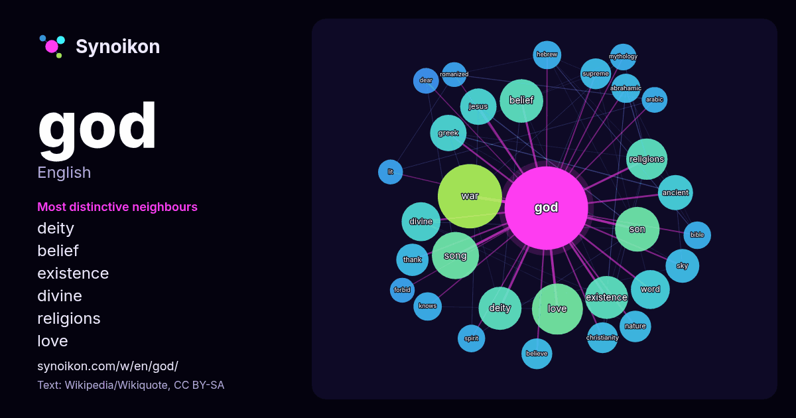

English · popular word
god
The words found around it in 1804 instances from Wikipedia, Wikiquote, Hacker News.

Most distinctive neighbours
- deity 36×
- belief 32×
- existence 30×
- divine 29×
- religions 25×
- love 24×
- jesus 23×
- sky 20×
- thank 19×
- abrahamic 19×
- christianity 18×
- greek 17×
- ancient 16×
- knows 16×
- hebrew 16×
- word 15×
- war 15×
- mythology 15×
- believe 14×
- dear 14×
× = how many times more often than in general Wikipedia text.
Most frequent neighbours
- war 87
- love 55
- song 47
- son 42
- belief 40
- deity 39
- existence 39
- religions 36
- divine 32
- word 32
- album 30
- film 28
- greek 28
- jesus 28
- father 27
- american 26
- ancient 26
- country 24
- sky 24
- man 23
In context
- A supreme deity, supreme being, supreme god, or simply just God (often with capital G), is a deity within theistic belief systems which is believed to Wikipedia snippets · God
- A god is a male deity. God is the supreme deity in theistic beliefs. God or gods may also Wikipedia snippets · God (disambiguation)
- A god of war is a deity associated with war. God of War or Gods of War may also refer to: The Gods of War, a 1985 novel by historical author John Toland Wikipedia snippets · God of War
- There is no God! (Бога нет!, transliterated: Boga net! or Boga nyet!) is a 1975 Soviet communist propaganda poster created by graphic artist Vladimir Wikipedia snippets · There is no God!
- Is God Is is an American play by Aleshea Harris. In 2018 a production directed by Taibi Magar opened Off-Broadway at Soho Rep and ran from February 6 Wikipedia snippets · Is God Is
- God king, or God-King, is a term for a deified ruler or a pagan deity that is venerated in the guise of a king. In particular, it is used to refer to: Wikipedia snippets · God king
- God of War Laufey is an upcoming action-adventure game in development by Santa Monica Studio and to be published by Sony Interactive Entertainment. It Wikipedia snippets · God of War Laufey
- phrase "Armor of God" (Ancient Greek: πανοπλίαν τοῦ Θεοῦ, panoplian tou Theou) is derived from Ephesians 6:11: "Put on the whole armour of God, that ye may Wikipedia snippets · Armor of God
More words
- art
- autumn
- bell
- bread
- bridge
- cat
- city
- climate
- clock
- death
- desert
- dog
- family
- food
- forest
- garden
- gold
- health
- heart
- history
- honey
- horse
- island
- language
- life
- map
- mirror
- money
- mother
- mountain
- nature
- power
- rain
- road
- salt
- science
- shadow
- silence
- song
- star
- storm
- summer
- tea
- time
- train
- truth
- water
- winter
- work
Precomputed on 2026-10-09 with default settings (±5 words, medium corpus). The interactive map can refresh it with live data.